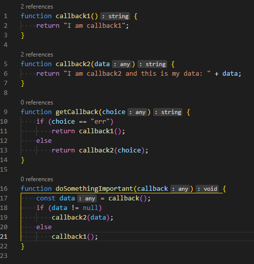

Node.js® is a JavaScript runtime built on Chrome's V8 JavaScript engine. Node.js with its default package manager - npm (and npx) - allows you to import libraries and gain the ability to develop, deploy, and maintain all kinds of server-like applications, including a web server, which is the topic this site is based around.
At KEA, the library we always use when starting a new project is express. This library provides easy handling of web requests and client connections, as well as useful ways of proccessing this data.
Node.js is very efficient at the task of running the code of these servers because it is asynchronous, meaning that it is executing one task at a time, without necessarily waiting for a response before taking the next step. This way, it will use less system memory while running the code, and will provide fast execution of the code, as well as fast response times due to the lack of complexity that it needs to process all tasks.
Corporate users of Node.js software include GoDaddy, Groupon, IBM, LinkedIn, Microsoft, Netflix, PayPal, Rakuten, SAP, Walmart, Yahoo!, and Amazon Web Services (source).
Node.js is a JavaScript runtime, thus it compiles JavaScript files. The JavaScript programming language has the following properties:
A value in JavaScript is always of a certain type. For example, a string or a number. There are eight basic data types in JavaScript. We can put any type in a variable. Programming languages that allow such things, such as JavaScript, are called "dynamically typed", meaning that there exist data types, but variables are not bound to any of them.
The number type represents both integer and floating point numbers.
BigInt type was recently added to the language to represent integers of arbitrary length.
A string in JavaScript must be surrounded by quotes. A string may consist of zero characters (be empty), one character or many of them.
The boolean type has only two values: true and false.
The special null value does not belong to any of the types described above. It forms a separate type of its own which contains only the null value.
The special value undefined also stands apart. It makes a type of its own, just like null. The meaning of undefined is “value is not assigned”.
Objects are used to store collections of data and more complex entities. The symbol type is used to create unique identifiers for objects.

Callback functions are what makes Node.Js asynchronous.
Using callbacks allows the program to do later processing of the data returned by a function, so that the function
can be called again in other I/O operations.
(source)